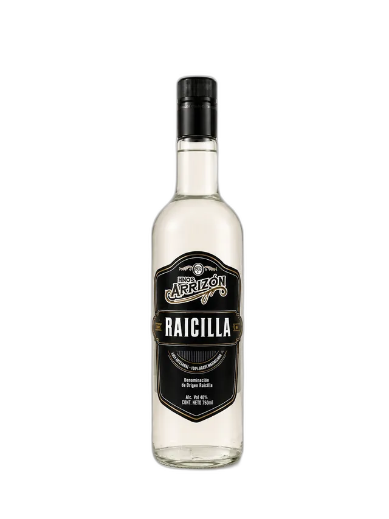

Raicilla Hnos. Arrizón
Raicilla Blanco 750 ml
Raicilla artesanal de agave maximiliana de la sierra de Mascota, Jalisco.
Ver producto
Raicilla Hnos. Arrizón
Raicilla artesanal de agave maximiliana de la sierra de Mascota, Jalisco.
Ver producto